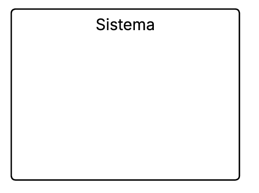
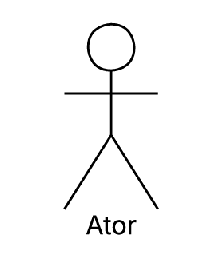
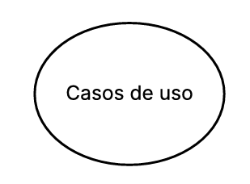
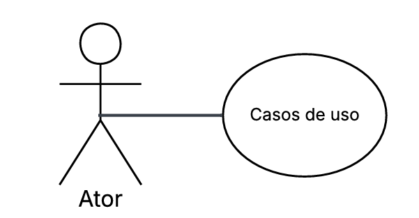
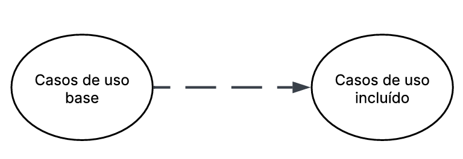
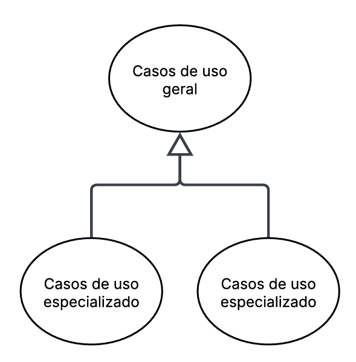
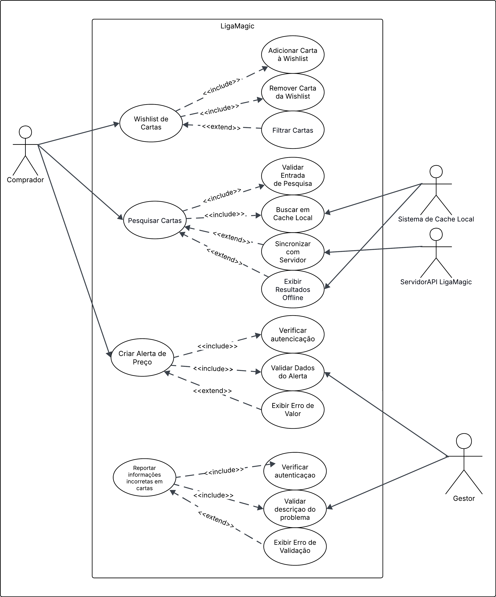

Casos de Uso¶
Descrição¶
Os casos de uso descrevem como o consumidor interage com o sistema para realizar determinadas tarefas ou atingir objetivos específicos. Eles representam os diferentes cenários de uso, mostrando as ações do consumidor e as respostas do sistema em cada situação. Essa técnica ajuda a compreender melhor o comportamento esperado da aplicação e garante que todos os requisitos funcionais sejam identificados e documentados de forma clara.
Objetivo¶
O objetivo dos casos de uso é detalhar o funcionamento do sistema a partir da perspectiva do consumidor, facilitando o entendimento entre desenvolvedores, analistas e stakeholders. Com eles, é possível visualizar os principais fluxos de interação, identificar possíveis falhas ou melhorias e assegurar que o sistema atenda às necessidades reais dos consumidores e aos requisitos definidos no projeto.
Metodologia¶
| Nome | Função | Elemento |
|---|---|---|
| Sistema | Representado por um retangulo o sistema define os limites do sistema, indicando o que está dentro do seu escopo e o que está fora representando o conjunto de funcionalidades que serão modeladas |  |
| Atores | Representado por bonecos palito os atores representam os consumidores, pessoas ou outros sistemas que interagem com o sistema principal, executando ações ou recebendo respostas |  |
| Casos de Uso | Repesentado por uma forma geometrica oval os casos de uso descrevem as funcionalidades ou serviços que o sistema oferece aos atores sendo que cada caso de uso representa um objetivo ou tarefa que o consumidor pode realizar |  |
| Relacionamento de Associação | Representado por uma linha contínua o relacionamento de associação mostra a ligação direta entre um ator e um caso de uso, indicando que o ator participa daquela funcionalidade |  |
| Relacionamento de Inclusão | Representado por uma linha tracejada ligando um caso de uso base até um caso de uso incluído com uma seta no final. O relacionamento de inclusão indica que um caso de uso inclui obrigatoriamente outro caso de uso em seu fluxo normal de execução |  |
| Relacionamento de Extensão | Representado por uma linha tracejada ligando um caso de uso estendido até um caso de uso base com uma seta no final. O relacionamento de extensão representa comportamentos opcionais ou condicionais, que ocorrem apenas em determinadas situações dentro de um caso de uso |  |
| Relacionamento de Generalização | Representado por uma seta contínua ligando o caso de uso especializado ao caso de uso geral, com um triângulo na ponta voltado para o caso de uso geral. O relacionamento de generalização mostra a herança entre atores ou casos de uso, quando um elemento herda características ou comportamentos de outro |  |
Tabela 1: Elementos do diagrama de casos de uso
Fonte : Guilherme, 2025
Autoria dos Casos de Uso¶
A tabela 2 apresenta a associação entre cada caso de uso e o integrante responsável por sua criação.
| Caso de Uso | Nome | Autor |
|---|---|---|
| UC01 | Wishlist de Cartas | Angélica |
| UC02 | Pesquisar Cartas | Angélica |
| UC03 | Definir Alerta de Preço para uma Carta | Vera |
| UC04 | Reportar Erro em Carta ou Anúncio | Vera |
| UC05 | Personalizar Perfil de Jogador | Marcelo |
| UC06 | Filtrar Busca por Condição | Marcelo |
| UC07 | Gerenciamento de Listas de Decks | Raissa |
| UC08 | Compra por Lista | Raissa |
| UC09 | Publicar Novo Tópico no Fórum | Samuel |
| UC10 | Compartilhar Carta por Link Direto | Samuel |
| UC11 | Confirmar Recebimento e Avaliar Vendedor | Thiago |
| UC12 | Transferir Carta da Lista de Desejos para Coleção Pessoal | Thiago |
Tabela 2: Autoria dos casos de uso
Fonte: Samuel, 2025
Diagrama de Casos de Uso¶
A figura 1 demonstra o diagrama de casos de uso.

Figura 1: Casos de uso do app LigaMagic
Fonte: Angélica, Vera e Guilherme, 2025
PDFs com Diagrama de casos de Uso¶
Diagrama de caso de uso: Definir Alerta de Preço para uma Carta (PDF)
Diagrama de caso de uso: Reportar Erro em Carta ou Anúncio (PDF)
Diagrama de caso de uso: Personalizar Perfil de Jogador (PDF)
Diagrama de caso de uso: Filtrar Busca por Condição (PDF)
Especialização dos casos de uso¶
Caso de uso 01 - Wishlist de Cartas¶
| UC01 | Informações |
|---|---|
| Nome: | Wishlist de Cartas |
| Atores: | Comprador |
| Descrição: | Jogador adiciona carta à lista de desejos para compra futura. |
| Objetivo: | Salvar carta para compra futura. |
| Ação: | Adicionar item à lista pessoal de desejos. |
| Pré-condições: | - Consumidor autenticado no sistema - Carta disponível no catálogo |
| Pós-condição: | - Carta adicionada à wishlist do consumidor - Contador de itens atualizado - Dados sincronizados no servidor |
| Fluxo principal: | 1. Comprador visualiza carta na lista de resultados ou tela de detalhes da carta 2. Clica no ícone "Adicionar à Wishlist" 3. Sistema valida sessão e disponibilidade 4. Sistema adiciona carta à wishlist do consumidor 5. Sistema exibe feedback visual de confirmação 6. Sistema atualiza contador na interface |
| Fluxos alternativos: | - Sistema detecta duplicata - Exibe "Já na sua wishlist" - Oferece opção de remove |
| Fluxos de exceção: | - Sistema detecta token inválido - Redireciona para tela de login - Mantém contexto da carta para retorno |
| Rastreabilidade | RFNI14 |
| Data de criação | 10/10/2025 |
| Autoria | Angélica |
Fonte: Angélica
Caso de uso 02 - Pesquisar Cartas¶
| UC02 | Informações |
|---|---|
| Nome: | Pesquisar Cartas |
| Atores: | Comprador |
| Descrição: | Consumidor busca cartas por nome, tipo ou categoria. |
| Objetivo: | Encontrar cartas específicas rapidamente para consulta ou compra |
| Ação: | Realizar busca no catálogo de cartas |
| Pré-condições: | - Aplicativo conectado à internet - Serviço de busca disponível - Catálogo de cartas carregado |
| Fluxo principal: | 1. Consumidor acessa aba de pesquisa 2. Digita termo de busca (nome, tipo ou categoria) 3. Sistema valida entrada e envia requisição 4. Sistema processa busca e filtra resultados 5. Sistema exibe lista de cartas correspondentes 6. Consumidor visualiza e navega pelos resultados |
| Fluxos alternativos: | - Consumidor aplica filtros antes da busca - Sistema combina termo com filtros aplicados - Retorna resultados refinados |
| Pós-condição: | - Resultados da pesquisa exibidos na tela - Histórico de busca atualizado - Consumidor pode selecionar cartas para detalhes |
| Fluxos de exceção: | - Sistema não encontra correspondências - Exibe "Nenhuma carta encontrada" - Sugere termos similares ou categorias |
| Rastreabilidade | RFNI15 |
| Data de criação | 10/10/2025 |
| Autoria | Angélica |
Fonte: Angélica
Caso de uso 03 - Definir Alerta de Preço para uma Carta¶
| UC03 | Informações |
|---|---|
| Nome: | Definir Alerta de Preço para uma Carta |
| Atores: | Comprador |
| Descrição: | Permite criar uma notificação automática para ser avisado quando o preço de uma carta específica atingir um valor desejado. |
| Pré-condições: | - A conta está autenticada no sistema. - A página de detalhes da carta desejada está aberta. |
| Fluxo principal: | 1. O botão "Criar Alerta de Preço" é clicado na página da carta. 2. O sistema exibe um formulário (modal) com os campos: Condição (ex: "Preço abaixo de", "Preço acima de") e Valor (R$). 3. A condição desejada é selecionada. 4. Um valor de preço válido é inserido. 5. O botão "Salvar Alerta" é clicado. 6. O sistema valida os dados inseridos. 7. O sistema cria o registro do alerta de preço no banco de dados. 8. O sistema exibe a mensagem "Alerta de preço definido com sucesso!" e fecha o formulário. |
| Fluxo alternativo: | - A condição ou valor é revisada antes de salvar: o formulário permanece aberto para ajustes. |
| Fluxos de exceção: | - Valor inválido ou ausente se o campo "Valor" não for preenchido ou for negativo/não numérico, o sistema exibe: "Por favor, insira um valor de preço válido." O formulário permanece aberto. |
| Pós-condição: | Um novo alerta de preço é registrado no sistema, associado à conta e à carta, e o sistema exibe uma mensagem de confirmação de sucesso. |
| Rastreabilidade | RFNI05 |
| Data de criação | 10/10/2025 |
| Autoria | Vera |
Fonte: Vera Lucia, 2025
Caso de uso 04 - Reportar Erro em Carta ou Anúncio¶
| UC04 | Informações |
|---|---|
| Nome: | Reportar Erro em Carta ou Anúncio |
| Atores: | Comprador, Administrador |
| Descrição: | Permite que um comprador, ao identificar um erro nas informações de uma carta ou em um anúncio, envie um reporte para a administração da plataforma para análise e correção. |
| Pré-condições: | O comprador está autenticado e navegando na página da carta específica. |
| Fluxo principal: | 1. O botão "Reportar Problema" é acionado na página da carta. 2. O sistema exibe um formulário de reporte. 3. O tipo de erro é selecionado (Dados da Carta Incorretos, Formato da carta incorreto, Preço incorreto). 4. Uma descrição detalhada do problema é inserida. 5. A caixa "Não sou um robô" é marcada e o formulário é submetido. 6. O sistema valida os dados e registra o reporte. 7. O sistema exibe a mensagem "Problema reportado com sucesso." |
| Fluxo alternativo: | - O consumidor decide revisar ou editar o detalhe do erro antes de enviar: o sistema mantém o formulário aberto para edição. - 5b. O consumidor decide alterar o tipo de erro selecionado: o sistema atualiza a seleção no formulário antes do envio. |
| Fluxos de exceção: | - Tipo de erro não selecionado o sistema exibe: "Selecione o tipo de erro antes de enviar." O formulário permanece aberto. - Falha de conexão o sistema exibe: "Falha no envio. Verifique sua conexão e tente novamente." O formulário permanece aberto. |
| Pós-condição: | Um novo reporte é registrado no sistema, associado à carta específica, e o comprador recebe confirmação visual do envio. |
| Rastreabilidade | RFNI07 |
| Data de criação | 10/10/2025 |
| Autoria | Vera |
Fonte: Vera Lucia, 2025
Caso de uso 05 - Personalizar Perfil de Jogador¶
| UC05 | Informações |
|---|---|
| Descrição | Este caso de uso descreve como o jogador realiza a atualização de suas informações pessoais, como avatar e endereço de envio, em seu perfil na plataforma. |
| Atores | Jogador Comum (ator principal), Sistema |
| Pré-condição | O jogador deve estar autenticado (logado) no sistema. |
| Pós-condição | As informações do perfil do jogador são atualizadas e armazenadas no sistema. A alteração é refletida imediatamente na plataforma. |
| Fluxo principal | 1. O jogador acessa a área "Meu Perfil". O sistema exibe as informações atuais do perfil e as opções de edição. O jogador seleciona um campo para editar (ex: Avatar, Endereço). O sistema apresenta a interface de edição para o campo selecionado. O jogador insere as novas informações (ex: faz upload de imagem, preenche novo CEP). O jogador aciona a opção para salvar a alteração. O sistema valida os dados inseridos. O sistema registra a alteração e apresenta a confirmação ao jogador, atualizando a tela de perfil. |
| Fluxo alternativo | - 6a. O jogador decide cancelar a edição: o sistema descarta as alterações e retorna à tela de visualização do perfil. |
| Fluxo de exceções | - E1. Falha no upload da imagem (formato/tamanho inválido): o sistema exibe uma mensagem de erro e solicita um novo arquivo. - E2. Dados obrigatórios não preenchidos (ex: rua em um endereço): o sistema alerta sobre o campo e impede o salvamento. - E3. Falha de conexão com o sistema: o sistema exibe uma mensagem de erro e informa que a alteração não pôde ser salva. |
| Rastreabilidade | RFNI01 |
Fonte: Marcelo, 2025
Caso de uso 06 - Filtrar Busca por Condição¶
| UC06 | Informações |
|---|---|
| Descrição | Este caso de uso descreve como o jogador refina uma lista de resultados de busca de cartas, aplicando um filtro baseado na qualidade/condição de conservação do item. |
| Atores | Jogador Comum (ator principal), Vendedor (ator principal), Sistema |
| Pré-condição | O jogador deve ter realizado uma busca e estar na página de resultados. |
| Pós-condição | A lista de resultados é atualizada para exibir apenas os itens que correspondem ao critério de condição selecionado pelo jogador. |
| Fluxo principal | 1. O jogador aciona a opção "Filtros". O sistema exibe as categorias de filtro disponíveis. O jogador seleciona a categoria "Condição". O sistema exibe as opções de condição (ex: Near Mint, Slightly Played, etc.). O jogador seleciona uma ou mais condições desejadas. O jogador confirma a aplicação do filtro. O sistema processa a requisição e atualiza a lista de resultados na tela. |
| Fluxo alternativo | - 6a. O jogador decide limpar um filtro selecionado: o sistema desmarca a opção.6b. O jogador decide fechar a janela de filtros sem aplicar: o sistema retorna à página de resultados sem realizar alterações. |
| Fluxo de exceções | - E1. Nenhum resultado corresponde ao filtro: o sistema exibe uma mensagem "Nenhum resultado encontrado para os filtros aplicados" e sugere a remoção do filtro. - E2. Falha de conexão com o sistema ao aplicar o filtro: o sistema exibe uma mensagem de erro e mantém a busca original. |
| Rastreabilidade | RFNI03 |
Fonte: Marcelo, 2025
Caso de uso 07 – Gerenciamento de Listas de Decks¶
| UC07 | Informações |
|---|---|
| Descrição | O sistema permite que o jogador crie, edite, salve e gerencie listas de decks de forma personalizada. |
| Ator | - Jogador - Sistema |
| Pré-condições | 1. O jogador deve estar autenticado no sistema. 2. O sistema deve estar com banco de dados acessível. |
| Ação | O jogador cria e gerencia suas listas de decks através da interface do sistema. |
| Fluxo principal | - O jogador acessa a área de gerenciamento de decks. - Cria uma nova lista de deck. - Salva alterações realizadas. - Consulta ou edita decks existentes. |
| Fluxo alternativo | - O jogador tenta criar uma lista já existente. - O sistema solicita confirmação de sobreposição ou bloqueia duplicatas. |
| Fluxo de exceção | - Falha ao salvar lista no banco de dados. - Conexão interrompida durante a operação. |
| Pós-condições | A lista de decks do jogadoré salva e pode ser consultada e gerenciada futuramente. |
| Rastreabilidade | RFNI09 |
| Data de criação | 08/10/2025 |
| Autoria | Raissa Andrade |
Fonte: Raissa, 2025
Caso de uso 08 – Compra por Lista¶
| UC08 | Informações |
|---|---|
| Descrição | O sistema permite que o jogador adicione todos os itens de uma lista de decks diretamente ao carrinho e realize a compra. |
| Ator | - Jogador - Sistema de compras |
| Pré-condições | 1. O jogador deve ter uma lista de decks salva. 2. O sistema deve ter integração de compras e estoque. |
| Ação | O jogador seleciona uma lista e solicita a compra dos itens disponíveis. |
| Fluxo principal | - O jogador acessa a funcionalidade "comprar por lista". - Seleciona a lista de decks desejada. - O sistema verifica os itens disponíveis em estoque. - Adiciona os itens ao carrinho. - O jogador confirma a compra. |
| Fluxo alternativo | - Alguns itens não estão disponíveis em estoque. |
| Fluxo de exceção | - Falha na comunicação com o de estoque. - Erro no processamento da transação de pagamento. |
| Pós-condições | O jogador conclui a compra dos itens da lista de decks de forma simples. |
| Rastreabilidade | RFNI11 |
| Data de criação | 08/10/2025 |
| Autoria | Raissa Andrade |
Fonte: Raissa, 2025
Caso de uso 09 - Publicar Novo Tópico no Fórum¶
| UC09 | Informações |
|---|---|
| Nome do Caso de Uso | Publicar Novo Tópico no Fórum |
| Ator Principal | Jogador |
| Descrição | Permite que um jogador autenticado crie e publique uma nova discussão (tópico) em um subfórum específico do aplicativo, a fim de interagir com a comunidade. |
| Pré-condições | - O jogador deve estar autenticado (logado) no sistema. - O dispositivo deve possuir uma conexão ativa com a internet. |
| Pós-condições | - Um novo tópico é criado e se torna visível para outros consumidores no subfórum selecionado. - O tópico é permanentemente associado ao perfil do jogador que o criou. - O sistema inscreve o jogador para receber notificações de respostas em seu novo tópico. |
| Fluxo Principal | 1. O consumidor seleciona a seção "Fórum" no menu principal do aplicativo. 2. O sistema exibe a lista de categorias e subfóruns disponíveis. 3. O consumidor seleciona o subfórum desejado (ex: "Commander", "Modern", "Dúvidas de Regras"). 4. O sistema exibe a lista de tópicos existentes nesse subfórum. 5. O jogador aciona o comando para criar um "Novo Tópico". 6. O sistema apresenta um formulário com os campos "Título" e "Corpo da Mensagem". 7. O jogador preenche o título de forma objetiva e desenvolve sua questão ou comentário no corpo da mensagem. 8. O jogador aciona o comando "Publicar". 9. O sistema valida se os campos obrigatórios foram preenchidos. 10. O sistema armazena o novo tópico. 11. O sistema exibe mensagem de confirmação e atualiza a lista. |
| Fluxo Alternativo | A1. Jogador cancela a criação do tópico: - No passo 7, o jogador pode acionar um comando "Cancelar" ou "Voltar". - O sistema solicita uma confirmação para descartar o rascunho. - Se confirmado, o sistema descarta as informações e retorna o jogador à tela anterior (lista de tópicos do subfórum). |
| Fluxo de Exceção | E1. Publicação sem preenchimento dos campos obrigatórios: - No passo 9, se o campo "Título" ou "Corpo da Mensagem" estiver vazio, o sistema exibe uma mensagem de erro "Por favor, preencha todos os campos para continuar." e não efetiva a publicação. E2. Falha de conexão com a internet: - No passo 10, se o sistema não conseguir se comunicar com o servidor devido à ausência de conexão, a publicação falha. - O sistema exibe um alerta "Sem conexão com a internet. Verifique sua rede e tente novamente." e mantém o texto digitado pelo jogador para uma nova tentativa. |
| Rastreabilidade | RFNI02 |
| Data de criação | 07/10/2025 |
| Autoria | Samuel |
Fonte: Samuel, 2025
Caso de uso 10 - Compartilhar Carta por Link Direto¶
| UC10 | Informações |
|---|---|
| Nome do Caso de Uso | Compartilhar Carta por Link Direto |
| Ator Principal | Jogador |
| Descrição | Permite a um consumidor localizar uma carta específica no banco de dados do aplicativo e compartilhar um link direto para sua página de detalhes através de aplicativos de terceiros (mensageiros, redes sociais etc.). |
| Pré-condições | - O aplicativo está em execução. - O dispositivo possui uma conexão ativa com a internet para realizar a busca. - O consumidor pode ou não estar autenticado no sistema. |
| Pós-condições | - Um link compartilhável para a página da carta é gerado e disponibilizado para a interface de compartilhamento nativa do sistema operacional. |
| Fluxo Principal | 1. O consumidor utiliza a funcionalidade de "Busca" do aplicativo. 2. O consumidor digita o nome da carta desejada e inicia a pesquisa. 3. O sistema consulta o banco de dados e exibe uma lista de resultados correspondentes. 4. O consumidor seleciona a carta correta na lista de resultados. 5. O sistema exibe a tela de "Detalhes da Carta" com informações como imagem, texto de habilidades, edições e preços. 6. O consumidor aciona o comando/ícone "Compartilhar". 7. O sistema gera um link único e direto para a página daquela carta. 8. O sistema invoca a interface de compartilhamento nativa do sistema operacional. 9. O consumidor seleciona o aplicativo de destino e o contato para envio. |
| Fluxo Alternativo | A1. Consumidor cancela o compartilhamento: - No passo 8, após a interface de compartilhamento do sistema operacional ser exibida, o consumidor pode optar por fechá-la sem selecionar um aplicativo. - O sistema simplesmente retorna o consumidor para a tela de "Detalhes da Carta". |
| Fluxo de Exceção | E1. Carta não encontrada: - No passo 3, se a busca não retornar nenhum resultado, o sistema exibe uma mensagem informativa "Nenhuma carta encontrada. Verifique o nome e tente novamente." E2. Falha de conexão com a internet: - Durante os passos 3 ou 5, se a conexão com a internet for perdida, o sistema exibe uma mensagem de erro indicando a falha de comunicação e a impossibilidade de carregar os dados. |
| Rastreabilidade | RFNI06 |
| Data de criação | 07/10/2025 |
| Autoria | Samuel |
Fonte: Samuel, 2025
Caso de uso 11 - Confirmar Recebimento e Avaliar Vendedor¶
| UC11 | Informações |
|---|---|
| Nome do Caso de Uso | Confirmar Recebimento e Avaliar Vendedor |
| Ator Principal | - Jogador - Colecionador |
| Descrição | Permite que um comprador registre o recebimento de um pedido de cartas e, subsequentemente, submeta uma avaliação (notas e feedback textual) sobre a performance do vendedor da transação. |
| Pré-condições | - O comprador deve estar autenticado no sistema. - Deve existir um pedido de compra no status "Em Trânsito" ou "Aguardando Confirmação de Recebimento". - O prazo para confirmação de recebimento ou avaliação não pode ter expirado. |
| Pós-condições | - O status do pedido é alterado para "Concluído". - Uma nova entrada de Avaliação de Vendedor é persistida no banco de dados. - A nota e o feedback são utilizados para atualizar a pontuação e o histórico do vendedor. |
| Fluxo Principal | 1. O comprador acessa a seção "Meus Pedidos" no aplicativo. 2. O sistema exibe a lista de pedidos do comprador organizados por status. 3. O comprador localiza o pedido com status "Em Trânsito" ou "Aguardando Confirmação de Recebimento". 4. O comprador toca no pedido para visualizar os detalhes. 5. O sistema exibe as informações do pedido e o botão "Confirmar Recebimento". 6. O comprador toca no botão "Confirmar Recebimento". 7. O sistema altera o status do pedido para "Concluído" e exibe um formulário de avaliação do vendedor. 8. O sistema apresenta campos para avaliação: Velocidade de Envio (1-5 estrelas), Qualidade do Produto (1-5 estrelas), Atendimento (1-5 estrelas), Comentário (campo de texto opcional). 9. O comprador preenche as notas obrigatórias para cada critério de avaliação. 10. O comprador pode inserir um comentário adicional no campo de texto opcional. 11. O comprador toca no botão "Enviar Avaliação". 12. O sistema valida os dados inseridos. 13. O sistema salva a avaliação no banco de dados associada ao vendedor e ao pedido. 14. O sistema atualiza a pontuação geral do vendedor. 15. O sistema exibe mensagem de confirmação "Avaliação enviada com sucesso!" |
| Fluxo Alternativo | A1. Sair da Avaliação sem Enviar: - No passo 8, após o formulário ser exibido, o comprador decide não prosseguir e toca no botão "Cancelar" ou retorna à tela anterior. - O sistema fecha o formulário. O status do pedido permanece "Concluído" (já que o recebimento foi confirmado), mas nenhuma avaliação é registrada. A2. Conteúdo do Feedback Inadequado (Moderação Automática): - No passo 12, se o feedback textual contiver palavras-chave ou padrões identificados como ofensivos ou spam por um filtro de conteúdo automático. - O sistema exibe uma mensagem de alerta "O conteúdo do seu comentário parece inapropriado e não será publicado. Corrija para prosseguir." e aguarda a edição pelo comprador. |
| Fluxo de Exceção | E1. Tentativa de Avaliar Pedido Já Avaliado/Expirado: - No passo 4, se o pedido já tiver sido avaliado ou o prazo para avaliação for ultrapassado, o sistema exibe a mensagem "Este pedido já foi avaliado ou o prazo expirou". - O sistema não exibe a opção de avaliação e retorna o comprador para a tela anterior. E2. Falha na Validação de Campos Obrigatórios: - No passo 12, se o comprador tentar enviar a avaliação sem preencher as notas obrigatórias, o sistema impede o envio. - O sistema destaca os campos não preenchidos com uma mensagem de erro "Por favor, atribua uma nota para [Campo específico]." e aguarda a correção pelo comprador. |
| Rastreabilidade | RFNI04 |
| Data de criação | 08/10/2025 |
| Autoria | Thiago |
Fonte: Thiago, 2025
Caso de uso 12 - Transferir Carta da Lista de Desejos para Coleção Pessoal¶
| UC12 | Informações |
|---|---|
| Nome do Caso de Uso | Transferir Carta da Lista de Desejos para Coleção Pessoal |
| Ator Principal | - Jogador - Colecionador |
| Descrição | Permite que o comprador transfira uma carta da sua Lista de Desejos para sua Coleção Pessoal, registrando detalhes da aquisição (preço pago e condição), resultando na atualização do inventário e do valor da coleção. |
| Pré-condições | - O comprador deve estar autenticado no sistema. - A Lista de Desejos do comprador deve conter pelo menos um item. - O item a ser movido deve ter sido adquirido (presume-se a posse física da carta). |
| Pós-condições | - O item é removido da Lista de Desejos. - O item é adicionado à Coleção Pessoal do colecionador. - A Coleção Pessoal é atualizada com a nova quantidade e os metadados de aquisição (preço pago e condição). - O valor total da Coleção Pessoal é recalculado. |
| Fluxo Principal | 1. O comprador acessa sua Lista de Desejos através do menu "Minhas Listas" ou ícone dedicado. 2. O sistema exibe a Lista de Desejos do comprador com todas as cartas adicionadas. 3. O comprador localiza a carta que deseja mover para sua Coleção Pessoal. 4. O colecionador clica no botão "Mover para Coleção" ou ícone equivalente ao lado da carta. 5. O sistema exibe um formulário modal para preenchimento dos detalhes da aquisição. 6. O sistema apresenta os campos: Quantidade (padrão: 1), Condição da carta (ex: Perfeita, Boa, Danificada), Preço Pago (valor em R$). 7. O colecionador preenche os campos obrigatórios: seleciona a condição e informa o preço pago. 8. O colecionador clica em "Confirmar Transferência". 9. O sistema valida os dados inseridos. 10. O sistema remove o item da Lista de Desejos. 11. O sistema adiciona o item à Coleção Pessoal com os metadados informados. 12. O sistema recalcula o valor total da Coleção Pessoal. 13. O sistema exibe mensagem de sucesso "Carta adicionada à sua coleção com sucesso!" |
| Fluxo Alternativo | A1. Adição de Mais de Uma Cópia: - No passo 7, se o colecionador tiver comprado múltiplas cópias da mesma carta (ex: 4 cópias), o colecionador insere o número total de cópias no campo Quantidade (ex: 4). - O sistema remove apenas 1 item da Lista de Desejos (pois a lista representa o desejo de adquirir a carta) e adiciona a quantidade total (4) à Coleção Pessoal. |
| Fluxo de Exceção | E1. Falha na Validação de Condição ou Preço Pago: - No passo 9, se o comprador tentar confirmar sem preencher os campos Condição ou Preço Pago obrigatórios. - O sistema impede a submissão e destaca o campo obrigatório não preenchido com uma mensagem de erro "A condição da carta deve ser informada." ou "O preço pago deve ser informado." E2. Item Não Encontrado na Lista de Desejos: - No passo 4, se por alguma razão de latência ou erro, o item selecionado não for encontrado na Lista de Desejos ao tentar mover. - O sistema exibe uma mensagem de erro "Não foi possível localizar o item. Tente novamente ou adicione-o diretamente à sua coleção." e o fluxo é encerrado. |
| Rastreabilidade | RFNI10 |
| Data de criação | 08/10/2025 |
| Autoria | Thiago |
Fonte: Thiago, 2025
Video de validação feita com um comprador¶
Para a validação dos casos de uso, cada integrante do grupo ficou responsável por validar os casos de uso de sua autoria. A seguir, são apresentados os vídeos referentes às validações realizadas:
- Assista ao vídeo no YouTube. Este video foi produzido pela aluna Angélica Campos.
- Assista ao vídeo no YouTube Este video é referente à validação dos casos de uso 03 e 04 e foi produzido pela aluna Vera Lucia.
- Assista ao vídeo no YouTube Este video é referente à validação dos casos de uso 05 e 06 e foi produzido pelo aluno Marcelo.
- Assista ao vídeo no YouTube Este vídeo foi produzido pelo aluno Samuel, sendo referente à validação dos casos de uso 09 e 10 (Os minutos estão na descrição).
- Assista ao vídeo no YouTube Este vídeo foi produzido pelo aluno Thiago, sendo referente à validação dos casos de uso 11 e 12 (Os minutos estão na descrição).
- Assista ao vídeo no YouTube Este vídeo foi produzido pela aluna Raissa, sendo referente à validação dos casos de uso 07 e 08 (Os minutos estão na descrição).
Bibliografia¶
- LUCID SOFTWARE PORTUGUÊS. Tutorial de Caso de Uso UML. YouTube, 20 mar. 2020. Disponível em: Vídeo Completo. Acesso em: 07 out. 2025.
Nível de Contribuição dos Integrantes¶
| Nome | % de Contribuição |
|---|---|
| Guilherme | 7% |
| Angélica | 21,6% |
| Marcelo | 14,28% |
| Raissa | 14,28% |
| Vera | 14,28% |
| Samuel | 14,28% |
| Thiago | 14,28% |
Histórico de versão¶
| Versão | Data | Descrição | Autor(es) | Revisor |
|---|---|---|---|---|
| 1.0 | 07/10/2025 | Adição da Descrição, objetivo e metodologia | Guilherme | Angélica |
| 1.1 | 09/10/2025 | Adição de casos de usos: filtrar por condição e personalizar perfil do jogador | Marcelo | |
| 1.2 | 09/10/2025 | Adição de casos de usos: UC09 – Gerenciamento de Listas de Decks e UC11 – Compra por Lista | Raissa | |
| 1.3 | 10/10/2025 | Correção dos casos de uso 1 e 2 | Angélica | Marcelo, Raissa, Vera |
| 1.4 | 10/10/2025 | Adicionar os casos de uso 09 a 12 | Samuel | Thiago |
| 1.5 | 10/10/2025 | Correção das palavras "usuários" | Thiago | Raissa |
| 1.6 | 11/10/2025 | Adição da tabela de autoria dos casos de uso | Samuel | Thiago |
| 1.7 | 11/10/2025 | Adição do vídeo de validação | Vera | Raissa |
| 1.8 | 11/10/2025 | Adição do vídeo de validação e de casos de uso | Marcelo | Samuel |
| 1.8.1 | 11/10/2025 | Adição do vídeo de validação e de casos de uso dos integrantes | Thiago | Marcelo |
| 1.9 | 12/10/2025 | Melhorada a rastreabilidade dos requisitos | Samuel | Thiago |